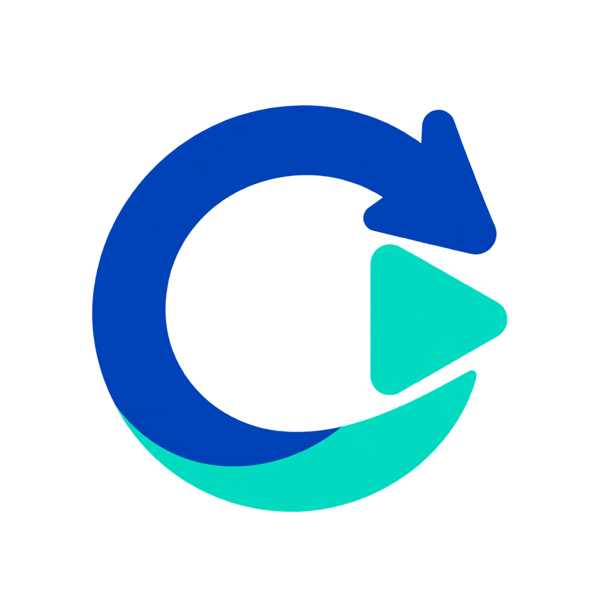

MAIN PAGES / 5 个主页面

Sentinel默认 1160 × 820。原型右上角可切换主题，侧栏可进入全部页面。也可以在设置中选择暗黑、白色或跟随系统。
5 个主页面 + 持续激活模式 + 恢复设置、自动化历史与日志、软件更新、托盘菜单，共 10 组界面、20 张双主题截图。预约编辑、队列操作、对话搜索、主题切换均可在原型中体验。所有数据与执行行为均为本地模拟。
参考 VS Code Dark Modern 与 Light Modern 的中性色层级，重新调整为 Sentinel 的布局与信息密度。暗色界面没有绿色底色；颜色用于操作和状态。新增文件全部位于 round-02-neutral，第一轮与正式 App 保持独立。实现仍需单独授权。